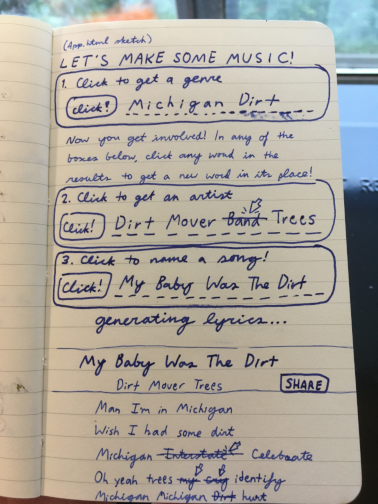

PROPOSAL
What is FSOM?
FSOM, or Future Sound Of Music, is a web app. It sources music genres yet to come from the Binary Jazz Genrerator API (see sources). Then it uses RiTa.js (see sources again) to extrapolate song titles, artists, and lyrics from the words the Genrerator gives it. The user participates in this part by making suggestions, clicking words that don't fit to change them into hopefully better words (as in the Blackout Poetry Demo, also in the sources). After acting as an editor of the information around their new genre, the user can post their work to the community page.
And now, a paper mock-up of the App UI: (scroll down for more)
Q: Why are these bands/songs/lyrics so inane?
First of all, "Michigan Dirt" was a real genre name invented by the API. I just stuck with it. Natural language processing has come a long way, but I find a lot of humor and charm in AI when it shows how artificial it really is.
Since we have a very small data set to work with (Genrerator's genres are usually less than 4 words), RiTa.js will have a very limited scope of words to take inspiration from.
I plan to use enough RiTa features (especially rhymes in the lyrics portion of the program) to create text that rougly matches the essence of the given genre. However, I hope the results will be thoroughly silly and unrelatable to current musical tastes, to more accurately imagine what listening to the music of the future will be like.
PROJECT REQUIREMENTS
https://github.com/tonethar/IGME-330-Fall-2022/blob/main/projects/p1-checkpoint-2.mdRESOURCES UTILIZED
- RIT IGME 230 - Web Apps 9 (localStorage reference) | GitHub
- Composing Custom Elements With Slots And Named Slots | DigitalOcean
- Read and Write Data on the Web | Firebase Realtime Database Documentation
- How do I create a guid or uuid? | Stack Overflow
- Await is a reserved word? | Stack Overflow
- crypto.randomUUID Documentation (found through the above question) | Mozilla Reference
- HTML Web Storage API Intro | w3schools
- JSON Object Literals Intro | w3schools
- Everything I needed to know about array manipulation | Mozilla Reference
- Object.assign() | Mozilla Reference
- beforeunload event | Mozilla Reference
- All about promises | Mozilla Reference
- element.setAttribute() | Mozilla Reference
- All the logical operators you could ever want | Mozilla Reference
- Dataset of Synonyms from WordNet Database v3.0 | Kaggle
- RiTa.js by Rednoise (especially their learning page and documentation) | Rednoise.org
- Everything Bulma | bulma.io
API
It's all here:
https://binaryjazz.us/genrenator-api/NOTEWORTHY
There's a "song generator" that combines RiTa.js markov chains with a dataset of syllables containing 117,205 unique keys.GRADING
FSOM deserves a good grade.
Specifically, I think it deserves a 95% because those darn spinners do not spin (something's up with my async code, I know they used to spin).
TO DO
The spinner in the 'get genre' box of the app works. The rest do not. I think this because the fetch() api is used to fetch a genre name, and fetch() is all set up to work asynchronously. However, my generation code is not set up like that, and it needs to be adjusted for async and await to work. I know those keywords are in the script, they're just not doing anything.
The state resetting system in the app is also very much in need of a refactor. It does too much by hand and repeats itself too much. There isn't even a real state machine, just the implication of one.
I would like the community page to load songs in increments with a 'more!' button, instead of all at once.
The songs could be better.